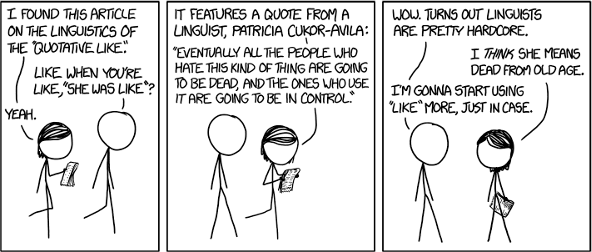
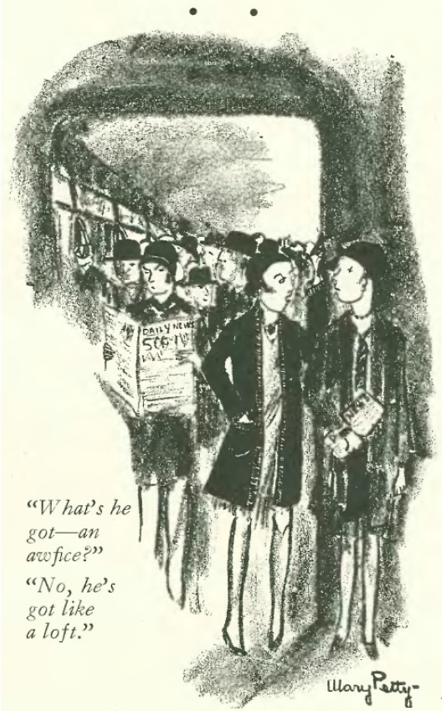
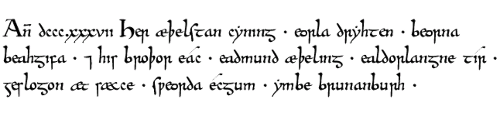
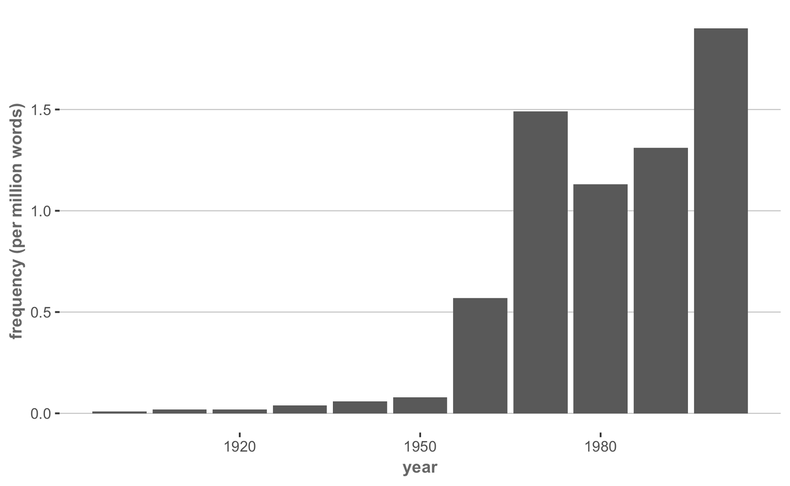

Linguistic Facts of Life
A crash course in language variation and change
![]()
Fall 2024
Linguistic Facts of Life
Some foundational principles
- All spoken language changes over time.
- All spoken languages are equal in terms of linguistic potential.
- Grammaticality and communicative effectiveness are distinct and independent issues.
- Written language and spoken language are historically, structurally and functionally fundamentally different creatures.
- Variation is intrinsic to all spoken language at every level, and much of that variation serves an emblematic purpose.
Prescriptive vs. Descriptive Grammar
What do we mean by “grammar”
- Prescriptive rule: Don’t end a sentence in a preposition
“where’s that at?” – at what point in the English language did this get Ok’d? You sound stupid, knock it off. (from Yelp.com)
What do we mean by “grammar”
What is a preposition?
the box
What do we mean by “grammar”
What is a preposition?
the box
below
What do we mean by “grammar”
What is a preposition?
above
the box
What do we mean by “grammar”
What is a preposition?
beside
the box
What do we mean by “grammar”
What is a preposition?
the box
inside
What do we mean by “grammar”
What is a preposition?
- Prepositions have semantic properties, such as indicating relationships in space and time or assigning qualities.
- They also have syntactic (or grammatical) properties; for example, they take noun phrases (like the box) as their objects.
What do we mean by “grammar”
Prescriptive rule: Don’t end a sentence in a preposition
- Besides all the fame and the stardom he enjoys, Shahrukh Khan is a man who family is everything to.
Question
How are you “supposed” to correct a sentence final preposition like this one?
What do we mean by “grammar”
Prescriptive rule: Don’t end a sentence in a preposition
- Besides all the fame and the stardom he enjoys, Shahrukh Khan is a man who family is everything to.
- The movement of the preposition is called pied-piping
What do we mean by “grammar”
Where did this “rule” come from?
The Preposition in the end of the sentence; a common fault with him, and which I have but lately observ’d in my own writings.
— John Dryden (1672) writing about Samuel Johnson
What do we mean by “grammar”
Where did this “rule” come from?
This is an idiom, which our language is strongly inclined to: it prevails in common conversation, and suits very well with the familiar style in writing: but the placing of the preposition before the relative, is more graceful, as well as more perspicuous; and agrees much better with the solemn and elevated style.
— Robert Lowth (1762)
What do we mean by “grammar”
Prescriptive rule: Don’t end a sentence in a preposition
“where’s that at?” – at what point in the English language did this get Ok’d? You sound stupid, knock it off. (from Yelp.com)
What do we mean by “grammar”
Prescriptive rule: Don’t end a sentence in a preposition
“If patients don’t know the meaning of a medical term, they can look it up. (from the New York Times)
What do we mean by “grammar”
Prescriptive rule: Don’t end a sentence in a preposition
“If patients don’t know the meaning of a medical term, they can look it up. (from the New York Times)
Question
Why doesn’t pied piping work on these kinds of sentence-final prepositions (look up, knock off, cop out, etc.)?
What do we mean by “grammar”
Prescriptive rule: Don’t end a sentence in a preposition
This is the kind of pedantic nonsense up with which I will not put!
- Winston Churchill (?)
What do we mean by “grammar”
Prescriptive grammar
- Prescriptive grammar mandates how language should be used and frequently ascribes values to particular features or shibboleths.
A Descriptive Exercise
A descriptive exercise
- Find a neighbor
- Take out a piece of scratch paper. You won’t be turning this in.
- Make a table that looks something like this one.
| Function 1 | Function 2 | Function 3 | Function 4 | Function 5 | Function 6 |
|---|---|---|---|---|---|
| Quotations (by letter): |
Quotations (by letter): | Quotations (by letter): | Quotations (by letter): | Quotations (by letter): | Quotations (by letter): |
| Description: |
Description: | Description: | Description: | Description: | Description: |
A descriptive exercise
- If I would blow her off to hang out with Kyle, she’d be like, “Why didn’t you call me back?” And I’d be like, “Why are you so obsessed with me?” (Mean Girls)
- It’s like I have ESPN or something. (Mean Girls)
- Yeah, I know. I’ve been, like, totally busy with school and practice and stuff. (Bring It On)
- She, like, writes all over her notebook, “Mrs. Aaron Samuels.” (Mean Girls)
- First you were like, “Whoa!” And then we were all like, “Whoa!” And then you were like, “Whoa.” (Finding Nemo)
- No. He cannot blow you off like that. (Mean Girls)
- And Janis was, like, weirdly jealous of him. (Mean Girls)
- Zach I love girls and I love comics, the two do not mix ok. Its gonna be like, “Let’s make their outfits cuter.” (The OC, “The Rager”)
- People totally like Brutus just as much as they like Caesar. (Mean Girls)
- Okay, let’s regroup. Clearly we’re not going to beat Das Sound Machine at their game. So we need to figure something else out, like, now. (Pitch Perfect 2)
- Whoa, look at this. The site has thousands of comments and likes on it. But they’re positive this time. (The DUFF)
A descriptive exercise
- Group each use of like (by letter) with the others that you think share the same function.
- One way to determine this is by a “substitution test.” Replace like with another word or phrase that means roughly the same thing and doesn’t require you to change around anything else. Can you do that same substitution with any of the other excerpts?
- There are exactly 6 functions.
- Some don’t have any others that match their function.
A descriptive exercise
- If I would blow her off to hang out with Kyle, she’d be like, “Why didn’t you call me back?” And I’d be like, “Why are you so obsessed with me?” (Mean Girls)
- It’s like I have ESPN or something. (Mean Girls)
- Yeah, I know. I’ve been, like, totally busy with school and practice and stuff. (Bring It On)
- She, like, writes all over her notebook, “Mrs. Aaron Samuels.” (Mean Girls)
- First you were like, “Whoa!” And then we were all like, “Whoa!” And then you were like, “Whoa.” (Finding Nemo)
- No. He cannot blow you off like that. (Mean Girls)
- And Janis was, like, weirdly jealous of him. (Mean Girls)
- Zach I love girls and I love comics, the two do not mix ok. Its gonna be like, “Let’s make their outfits cuter.” (The OC, “The Rager”)
- People totally like Brutus just as much as they like Caesar. (Mean Girls)
- Okay, let’s regroup. Clearly we’re not going to beat Das Sound Machine at their game. So we need to figure something else out, like, now. (Pitch Perfect 2)
- Whoa, look at this. The site has thousands of comments and likes on it. But they’re positive this time. (The DUFF)
What do we mean by “grammar”
Descriptive grammar
- Rules of language that describe how people communicate.
- We can describe how words function syntactically and morphologically.
- We can also describe who uses particular features and for what purposes—social, rhetorical, or both.
Question
What we just did with like is an example of a problem called polesemy or word-sense disambiguation. How would you solve this problem at scale if faced with the task of classifying the different functions of like?
What do we mean by “grammar”
Descriptive grammar
- Language varies by:
- Community (dialect)
- Use (register, genre)
- Situation (style)
- Individual (idiolect, style)
- Time (diachronic change)
What do we mean by “grammar”
- The features of speech communities are sometimes used as proxies for judgments (often negative) about those speakers.
What do we mean by “grammar”
Descriptive grammar
- Though such judgments aren’t reflected in the demonstrable realities of language use.
More male-identifying than female-identifying speakers use focuser like in all age cohorts except those 50-69 (Dailey-O’Cain 2000).
What do we mean by “grammar”
Descriptive grammar
- Though such judgments aren’t reflected in the demonstrable realities of language use.
More male-identifying than female-identifying speakers use quotative like across all age cohorts (Dailey-O’Cain 2000).
What do we mean by “grammar”
- Is quotative like used only my speakers of American English?
According to the GloWbe corpus, the frequency of [be] + like + “ is highest in Singaporean (5.28 per million words) and Malaysian English (3.43 per million words)
Language Change
Language change
- Then do speakers of all English varieties use quotative like?

Language change
- In the Corpus of Contemporary American English (COCA), quotative like shows an increase from 1990 until 2014, but appears to level off.
I + [be] + like + ” in the spoken text-type of COCA
Language change
- Although the use of focuser like certainly increased in the latter part of the 20th century, it is older than we might expect…

“What’s he got–an awfice?”
“No, he’s got like a loft.” (Mosher 1928)
Language change

Question
Can you read this? (It’s English…)
Language change
Her æþelstan cyning
beorna beahgifa
eadmund æþeling
geslogon æt sæcce
ymbe brunanburh
heowon heaþulinde
eorla dryhten
and his broþor eac
ealdorlangne tir
sweorda ecgum
Bordweal clufan
hamora lafan
Question
How about now? Can you recognize any words?
Language change
All languages (that are used) change over time.
Sentence-initial hopefully from Google n-grams shows a rapid increase in the middle of the 20th century.

Language change
- Lemmatized teenager from Google n-grams similarly shows an increase in the middle of the 20th century.
Question
Any guesses as to why that might be?
Language change
- The past tense of the verb burn has moved from burnt to burned over time.
Language change
- The variant quoth shows a decreasing frequency over time in Google n-grams, but is non-zero.
Question
Why might this variant be preserved in the data?
Language change
- The variant quoth shows a decreasing frequency over time in Google n-grams, but is non-zero.
Warning
Always consider how your data were collected and sampled before making claims about what a given pattern means. (Moore 2015)